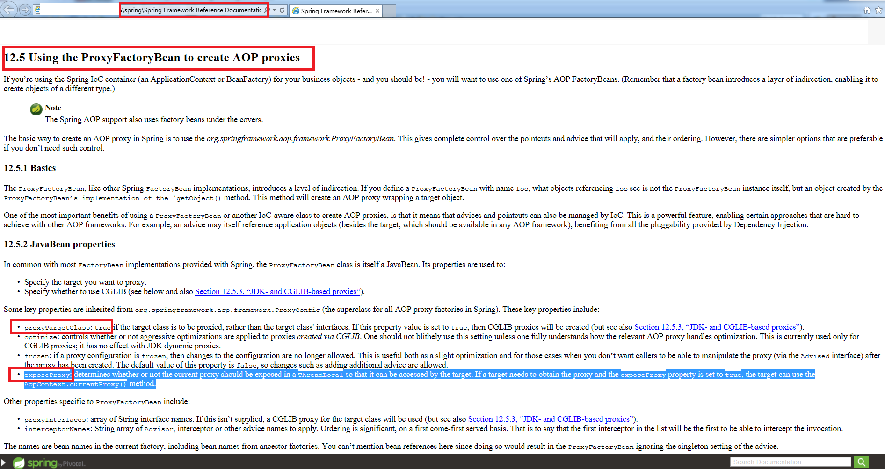

上一篇文章是一年前。。武汉疫情，人生第一次在家“正式上班”。。。悠悠假期不写博客？
这是一篇介绍方法的文章，为的是鼓励经常不自信的自己。我发现自己好像只要一段时间不解决问题，就似乎失去了能证明自己能力的依据，再加上健忘，解决过的难题过一段时间不接触就忘的差不多了，因此心里总是不踏实。
这不是介绍Spring Aop的文章，但是经过前2天的学习研究，我也基本弄明白了，此刻的我，信心满满。我需要记录下我解决问题的过程，为将来不自信的自己加油鼓劲~
序
- 2018年下旬定下的3年目标中的一个是学框架，其实当时没想好怎么学，当时只是作为一个新手一下扎进java分布式系统开发的浪潮，所接所触皆是框架，一下子被框架这个词所倾倒。现在想来，Spring应该是java学习的首选框架，因为它已经是J2EE的事实标准。学了一段时间，应该写点东西作为阶段性总结和成果了。
- 苏总说过，如果把一个人知道的东西比作是一个圆内的面积的话，随着这个圆越来越大，圆的周长也会越来越长，因此他知道圆外面自己不懂的东西也越来越多，因此也会越来越谦虚。后来看到邓宁-克鲁格效应，我知道自己在2018年翻过了愚昧山峰，因此才会定下3年计划。此刻，我正站在绝望之谷抬头仰望。在解决问题前我居然都感觉到了绝望，觉得坑太大，技术欠账太多，学无止境，不知道怎么才能解决这个问题。解决完后我又重拾自信，但是，问题是无穷无尽的，我不能一直这样过山车的心理状态。因此，我把这次解决问题的过程写下来，不管以后再遇到什么问题，我相信按着这个套路一定能解决的，不必慌张，不必害怕，我要为我爬上开悟之坡加油鼓劲。不打怪怎么升级呢？遇到的怪越多越好~~
- Spring AOP顺序是一个典型的spring的问题，可深可浅。定义了多个Spring的切面后，怎么控制顺序？Spring里面，定义切面的方法那么多，为什么有些方法可以有些不行？那么多属性，又各有什么含义？作为一个新手，怎么尽快解决这个问题？下面，我只回答最后一个问题，一个是我自己也没有完全掌握，另一个是我也不打算针对我遇到的问题（编程道路上的问题多如牛毛）都写一个博客，所以只讲思路和体会。
授人以渔
看书
看书的好处是系统的教你，坏处是厚厚的一本，只看书不一定能快速解决当前的问题。
顺便说一下，我看的是《Spring in action》，一开始觉得不习惯，感觉里面说的东西很多都一带而过，但是又很喜欢，因为里面把一些基础的思想、原理知识点都提到了。后来我明白了，因为Spring还有厚厚的用户指南，Spring是一个开源的不断变化的项目，这本书无法也没必要去覆盖这些细节。因此你还应该学会如下。google
查官网资料，各种资料。这是看书的补充，好处是更详尽，坏处也是更慢，不可能通读。Sping就有很详细的用户手册，详细到一度让我望而生畏，望而却步。但是，接触多了之后，你就知道，这是理所当然的学习方式。
找别人的经验。好处是最快捷最直接，如果找到了那就解决问题了。坏处是得碰运气，各种试，而且如果别人没把原理说清楚，你也只是暂时解决了问题，没有根本解决问题。放码过来
终于到了靠自己的时候了，能解决到什么程度，利用多少工具，就完全看个人修行啦。
（1）首先要有源码，这样才有分析的可能，不然就还是只能各种碰运气试，看日志猜。这也证明了开源的重要性，当然也可以反编译，只是有源码会更好一些。
（2）通过调试，跟踪的模式，把问题相对的聚焦到相关的源码上面。另外，log4j支持打印日志的同时，打印“输出这段日志的代码对应的源码”的具体位置，即程序名及对应代码所在的行数。这样就可以在相关的地方打断点，然后通过堆栈往上查找，看看相关的实现逻辑。另外，log4j或slf4j还支持桥接别的日志输出框架到自身，然后slf4j可以代理到别的日志输出框架（比如log4j），最后统一由logj4j控制debug级别输出。
（3）看代码的时候要做笔记，看源码时最好的辅助工具应该是画uml了。
（4）重现问题，或者做实验的最好方式，是写一个简化版的demo去试验，这样才能聚焦问题，避免被其它因素影响，才能最终从本质上理解。
对待框架的正确态度：
对于框架，即使是Spring这么优秀文档这么齐全，更别说平常工作中别人以方便使用的名义写的各种封装代码，只能说真是又爱又恨。恨的是因为框架做了各种封装，一定程度上阻碍了你认识事物的本质，让你从学习事物本质变为学习别人框架的使用。爱的是，其实你不能不爱，没有框架，你一个人根本做不过来。解决这之间的矛盾，方法只有一个，看源码，看别人写的代码。代码可以不是你写的，但只要有可能，就去看源码，这样遇到问题的时候你才可以靠自己。
实操
解决思路：
看书和google没什么好说的，做就是了。
分享一个找到的相关网页：薛定饿，里面的评论激励了我要靠自己。
显示一段资料，这里说明怎么在“代理对象”内获取“自己”，而不是获取“被代理的对象”，这样才可以重新进入“代理对象”，触发“代理对象”的其它通知（拦截方法）。

如下是靠自己的过程：
首先是简化版的demo，就是建一个项目，写一段Spring启动加载xml的代码，然后把要试验的aop的处理写上去。
然后是把jar包都关联源代码。
之后是修改log4j的日志级别和打印输出日志所在的源码位置，打断点调试。
调试分析
直接给结论了，首先如下是我调试的堆栈和找到的关键代码行，需要的话可以直接参考去打断点。由此可以看出Spring Aop 的处理顺序控制的逻辑大概是：获取Ioc容器里面的一个bean的时候，会同时搜出对应这个bean的所有代理，然后对代理做一个排序，排序是用AspectJ自己的方法进行的，大致是根据类上面的Order注解或者类实现Order接口后返回的数字作一个排序，另外也看同一个Order大小下，声明的前后顺序排序。具体还是看代码比较好，不同版本不确定是否有差异，正如哪位大神说的“废话少说，放码过来”。
创建切面
找到创建切面的地方
1 | Thread [main] (Suspended (breakpoint at line 127 in CglibAopProxy)) |
从这里找到入口，创建aop切面代理：
ProxyFactory(ProxyCreatorSupport).createAopProxy() line: 1051
2
3
4
5
6
7public class ProxyCreatorSupport extends AdvisedSupport {
protected final synchronized AopProxy createAopProxy() {
if (!this.active) {
activate();
}
return getAopProxyFactory().createAopProxy(this);
}
沿着调用堆栈往上一边看代码一边找，createProxy方法：
AnnotationAwareAspectJAutoProxyCreator(AbstractAutoProxyCreator).createProxy(Class<?>, String, Object[], TargetSource) line: 4691
2
3
4
5
6
7
8
9
10
11
12
13
14
15
16
17public abstract class AbstractAutoProxyCreator extends ProxyProcessorSupport
implements SmartInstantiationAwareBeanPostProcessor, BeanFactoryAware {
Advisor[] advisors = buildAdvisors(beanName, specificInterceptors);
for (Advisor advisor : advisors) {
proxyFactory.addAdvisor(advisor);
}
proxyFactory.setTargetSource(targetSource);
customizeProxyFactory(proxyFactory);
proxyFactory.setFrozen(this.freezeProxy);
if (advisorsPreFiltered()) {
proxyFactory.setPreFiltered(true);
}
return proxyFactory.getProxy(getProxyClassLoader());
继续往上，可以看到获取所有切面的地方：
AnnotationAwareAspectJAutoProxyCreator(AbstractAutoProxyCreator).wrapIfNecessary(Object, String, Object) line: 3491
2
3
4
5
6
7
8
9public abstract class AbstractAutoProxyCreator extends ProxyProcessorSupport
implements SmartInstantiationAwareBeanPostProcessor, BeanFactoryAware {
// Create proxy if we have advice.
Object[] specificInterceptors = getAdvicesAndAdvisorsForBean(bean.getClass(), beanName, null);
if (specificInterceptors != DO_NOT_PROXY) {
this.advisedBeans.put(cacheKey, Boolean.TRUE);
Object proxy = createProxy(
bean.getClass(), beanName, specificInterceptors, new SingletonTargetSource(bean));
找到对切面排序的地方
findEligibleAdvisors、sortAdvisors1
2
3
4
5
6
7
8
9
10
11
12
13
14
15
16
17
18
19public abstract class AbstractAdvisorAutoProxyCreator extends AbstractAutoProxyCreator {
protected Object[] getAdvicesAndAdvisorsForBean(Class<?> beanClass, String beanName, TargetSource targetSource) {
List<Advisor> advisors = findEligibleAdvisors(beanClass, beanName);
if (advisors.isEmpty()) {
return DO_NOT_PROXY;
}
return advisors.toArray();
}
protected List<Advisor> findEligibleAdvisors(Class<?> beanClass, String beanName) {
List<Advisor> candidateAdvisors = findCandidateAdvisors();
List<Advisor> eligibleAdvisors = findAdvisorsThatCanApply(candidateAdvisors, beanClass, beanName);
extendAdvisors(eligibleAdvisors);
if (!eligibleAdvisors.isEmpty()) {
eligibleAdvisors = sortAdvisors(eligibleAdvisors);
}
return eligibleAdvisors;
}
1 | public class AspectJAwareAdvisorAutoProxyCreator extends AbstractAdvisorAutoProxyCreator { |
找到排序的依据
最后一行的sorted变量1
2
3
4
5[ExposeInvocationInterceptor: order -2147483647, ,
AspectJAroundAdvice: order -1000, aspect4, declaration order 0,
AspectJAroundAdvice: order 1, aspect2, declaration order 0,
AspectJAroundAdvice: order 2, aspect3, declaration order 0,
AspectJAroundAdvice: order 3, aspect1, declaration order 0]
函数调用
找到当前适用的aop切面列表
1 | Thread [main] (Suspended (breakpoint at line 13 in Aspect4)) |
CglibAopProxy$DynamicAdvisedInterceptor.intercept(Object, Method, Object[], MethodProxy) line: 673
advised变量：this.advised = config;
根据advised变量逐个切面进行调用：chain = this.advised，chain, methodProxy).proceed();1
2
3
4
5
6
7
8
9
10
11
12
13
14
15
16class CglibAopProxy implements AopProxy, Serializable {
public CglibAopProxy(AdvisedSupport config) throws AopConfigException {
Assert.notNull(config, "AdvisedSupport must not be null");
if (config.getAdvisors().length == 0 && config.getTargetSource() == AdvisedSupport.EMPTY_TARGET_SOURCE) {
throw new AopConfigException("No advisors and no TargetSource specified");
}
this.advised = config;
this.advisedDispatcher = new AdvisedDispatcher(this.advised);
}
List<Object> chain = this.advised.getInterceptorsAndDynamicInterceptionAdvice(method, targetClass);
else {
// We need to create a method invocation...
retVal = new CglibMethodInvocation(proxy, target, method, args, targetClass, chain, methodProxy).proceed();
显示排序结果
advised变量：1
2
3
4
5
6
7
8
9
10
11
12
13
14
15
16
17
18
19
20
21
22
23
24
25
26org.springframework.aop.framework.ProxyFactory:
0 interfaces []; 5 advisors [
org.springframework.aop.interceptor.ExposeInvocationInterceptor.ADVISOR,
InstantiationModelAwarePointcutAdvisor: expression [execution(* testAop.ExampleRun.*(..))];
advice method [public java.lang.Object testAop.Aspect4.around(org.aspectj.lang.ProceedingJoinPoint) throws java.lang.Throwable];
perClauseKind=SINGLETON,
InstantiationModelAwarePointcutAdvisor: expression [execution(* testAop.ExampleRun.*(..))];
advice method [public java.lang.Object testAop.Aspect3.around(org.aspectj.lang.ProceedingJoinPoint) throws java.lang.Throwable];
perClauseKind=SINGLETON,
InstantiationModelAwarePointcutAdvisor: expression [execution(* testAop.ExampleRun.*(..))];
advice method [public java.lang.Object testAop.Aspect1.around(org.aspectj.lang.ProceedingJoinPoint) throws java.lang.Throwable];
perClauseKind=SINGLETON,
InstantiationModelAwarePointcutAdvisor: expression [execution(* testAop.ExampleRun.*(..))];
advice method [public java.lang.Object testAop.Aspect2.around(org.aspectj.lang.ProceedingJoinPoint) throws java.lang.Throwable];
perClauseKind=SINGLETON
];
targetSource [SingletonTargetSource for target object [testAop.ExampleRun@e53b70]];
proxyTargetClass=true;
optimize=false;
opaque=false;
exposeProxy=true;
frozen=false
逐个切面调用
切面的调用不是一个套一个递归调用，而是在一个列表里面循环调用：this.interceptorsAndDynamicMethodMatchers.get(++this.currentInterceptorIndex);1
2
3
4
5
6
7
8
9
10public class ReflectiveMethodInvocation implements ProxyMethodInvocation, Cloneable {
public Object proceed() throws Throwable {
// We start with an index of -1 and increment early.
if (this.currentInterceptorIndex == this.interceptorsAndDynamicMethodMatchers.size() - 1) {
return invokeJoinpoint();
}
Object interceptorOrInterceptionAdvice =
this.interceptorsAndDynamicMethodMatchers.get(++this.currentInterceptorIndex);